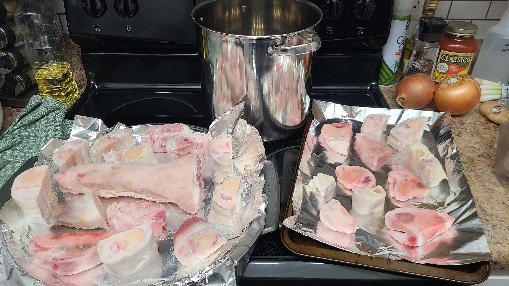
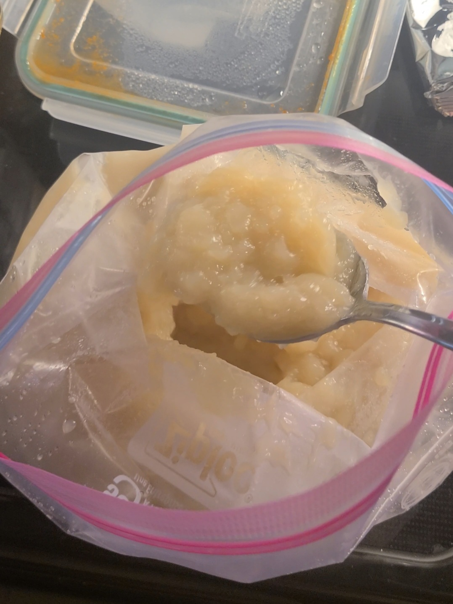

Stock, The Base of All Things Good
What is Stock?
Stock is a flavorful liquid made by simmering various ingredients in water over a long period of time. The most important ingredient in making most stocks are bones. You can use bones from any type of animal for your stock. Pork, Beef, Chicken, Fish, game, each will have a different flavor profile that works for different dishes. Pork for ramen, Beef for stew, Chicken for creamy soups, etc. The rest of the ingredients used in stock are made up of "aromatics". Aromatics are any herb, spice, or vegetable, that give off (pleasant) strong smells and flavors. Different cuisines from around the world each have their own set of go-to aromatics to add to stocks, but thanks to free-will, you can use whatever you like in yours. Some people even like to keep the scraps of vegetables from other recipes to use in their stock. It is a good way to reduce waste and make the most out of your ingredients (especially in this economy). Just make sure that your scraps don't have too much dirt on them before using.
Stocks are typically classified in one of two categories: White Stock or Brown Stock. White stock is when you add all of your ingredients to the pot as is, with little preparation beyond cleaning and cutting into manageable pieces. Brown stock is when you roast all of your ingredients in the oven before adding them to the pot. White stocks are typically used for light soups and sauces, things with a milder flavor. Brown stocks are used when you are looking for a deeper and richer flavor in your dish. Whether one type is better than the other is completely up to personal preference. They both have their place in the culinary world. Knowing how to make a good stock will unlock a WORLD of new flavors for you. It's like making home-made bread for the first time. Once you do it yourself, you can never go back to the taste of the store-bought version. The next page, will go into more of the things that can be made from different kinds of stock.
How to Make Stock
Today, we will go over how to make a brown stock. If you want a white stock, just skip over the roasting steps.
- Preheat your oven to 425 Degrees and line a sheetpan with aluminum foil.
- Get your ingredients out. For a basic multi-use stock, I like to use a French Mirepoix and Sachet d'Epices. A mirepoix consists of celery, onion and carrot. Sachet d'Epices translates to "bag of spices". It is a small sack made out of cheesecloth and has thyme, parsley, peppercorn, bay leaf, and garlic cloves. For stock, it is good to keep your Mirepoix chunky, it makes it easier to strain out at the end. Don't forget to get your bones. In the pictures shown below, I have used a mix of pork and beef bones.

- Now that your ingredients are prepped, go ahead and arrange them all on your sheetpan and coat everything in a high smoke point oil or clarified butter. Bake in the oven for about 30minutes or until the bones have a nice golden color on them.
- Once your ingredients have been browned, you are now ready to actually start making your stock. Place your ingredients in your pot, then fill with COLD water. There are a few different methods to determine how much water you need for stock. Many people follow a strict ratio like 3lbs of water for every 2lbs of bones, or even a 1:1 ratio for a thicker result. I like to use to "eyeball" method and just add water to the pot until all of my ingredients are covered by about an inch.
- Turn the heat on medium-high, and bring it to a gentle boil. Your ingredients should start to roll around without stirring, but not very fast. Once it has reached this point, cut the heat back to low and bring the pot down to a simmer. I like to keep a lid slightly ajar on the pot. This helps retain heat so it stays at a consistent temperature throughout the process.
- At this point, you can walk away for a little while. Just make sure to check on your pot regularly and give it an occasional stir so nothing sticks to the side or bottom.
- As your stock progresses, you will see grayish-brown bits float up to the top. We call that scum. It is all of the impurities from the bones and aromatics. You want to remove this regularly throughout the processes, as it will effect the final product if you don't. To do this, just take a spoon and scoop it off the top and throw it away. I like to keep a bowl or cup on the side to collect it, then throw it all away once I'm done. Whatever works best for you.
- Different types of bones will take different amounts of times to reach a good product. The smaller the bone, the less time it will take. But most stocks require a minimum of 1 hour. The longer you go, the richer the flavor will be. I like to go a full 8-12 hours for my stocks when I have the time. This generally gives me a very gelatinous end result as I have extracted all of the collagen from the bones.
The first image here shows stock right when I have turned the heat back down to a simmer. The second image is stock about halfway through the cooking process. The third image is stock when it is done, but before I have strained it.


- Once you are happy with where your stock is at, take it off the heat and let it cool down for a few minutes.
- Now it is time to strain it. I recommend using some type of mesh strainer or china cap lined with at least three layers of cheesecloth. If you have a nice thick cheesecloth, less layers are needed. Set your strainer into your container of choice, then slowly pour out the stock over it. Be careful to not let any of the ingredients make it into the final product.
- Once your stock is fully strained, you can go ahead and use it for whatever recipe you have planned or portion them into freezer-safe bags. If you choose to portion, set up an ice-bath to place the bags in to start the cooling process before moving to the freezer. I found this also helps keep the bags upright if I am trying to pour stock without any help.
This image is from a separate batch of stock than the previous set of images, as I didnt have a picture of the strained product for that. This is a good example of how gelatinous your stock can look once it is cooled.

Sources Referenced: